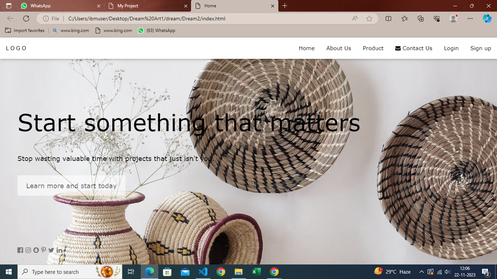
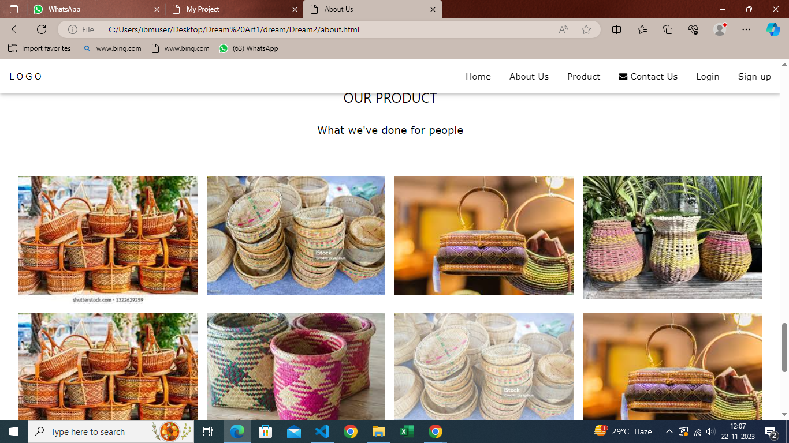
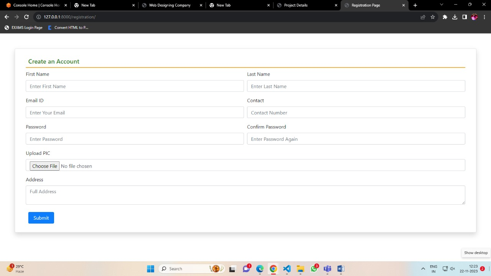
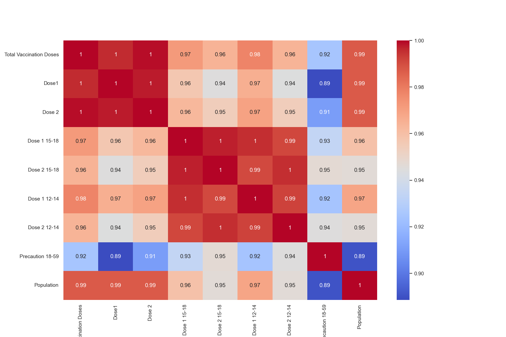
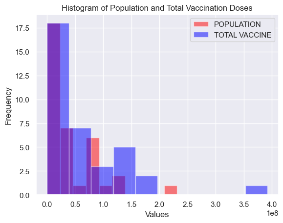

Cisco Packet Tracer is an effective education simulation software that supports computer networking students to experiment and practice network tasks. Cisco Networking Academy Program(CNAP) introduced Packet Tracer as a tool for teaching and learning of computer network courses by providing “simulation, visualization, authoring, collaboration capabilities and assessment”
CORE MODULE 4.
Dream Art
Hand craft website




"Handicraft is about processing materials by hand with hand tools. The results can be helpful things or decorative things. The materials utilized in the product are natural, industrially processed or maybe recycled. The models of the product are ancient, revised traditional or fashionable. Handicraft is deeply frozen in society and contributes to preserving and sending traditions. In their product, crafters transfer an area of their cultural heritage in ideas, forms, materials and work ways, similarly as their own values, philosophy of life, fashion and self-image. Craftspeople, conjointly known as artisans, possess technical data of materials and work ways. They’re skilled employees whose profession relies on manual skills. Their main tools are the power of work strategies and their manual skills. Handicraft contains plenty of implicit data which grows every year, aboard with skills. The order and apprentice system has been widely used to transfer skills and implicit data.”
CORE MODULE 5.
Info Explorers
Covid-19 Vaccine Data Analysis


"There are several COVID-19 vaccines approved for use by WHO (given Emergency Use Listing) and from other stringent regulatory agencies (SRAs). The first mass vaccination programme started in early December 2020 and the number of vaccination doses administered globally is updated regularly on the WHO COVID-19 dashboard. ”